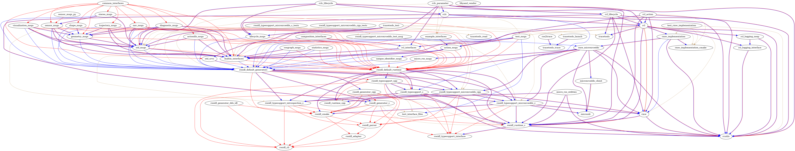

week7
2022/08/015 - 2022/08/020
上周任务
基于cmake编译包，剥离ament，并顺便把它的编译使用到的源文件一起复制出来。
方法：
- 删除CmakeLists.txt中和ament相关的命令；
- 手动补充头文件和静态库的链接
- 通过自定义命令，复制出参与编译的源文件；
完成情况
以rmw rcl为核心编译其相关依赖的包，完成了大部分；在该部分包中，ament的主要作用提供依赖关系和搜索路径，rmw_implementation包比较特殊，没有编译成功：rmw_implementation的依赖包rmw_implementation_cmake里面没有c文件，导致编译后什么没有生成，而rmw_implementation的CmakeLists.txt出现几个无法识别的命令，导致编译失败。
最复杂的包是rosidl_*相关的包，他们的CmakeList.txt不是为了编译出静态文件和复制公共头文件，而是复制一些python脚本，比如rosidl_default_generators, rosidl_generator_c。这部分和ament的耦合非常严重，剥离ament相关包后会导致不清楚该包的作用和它的上层包如何使用。
周会讨论主题
- idl、msg相关的包剥离amnet的难度较大，ament似乎还负责调用python脚本的功能，因此，感觉完全剥离ament越来越现实，得寻找突破点；
package 编译日志
包的依赖关系：

基本编译条件
# 交叉编译路径
Toolchain="$PWD""/my_custom_toolchain.cmake"
# install路径
Dir_Install="$PWD""/install"
#当前文件路径
Base_File="$PWD"
#基本编译参数
Base_Param="-DCMAKE_TOOLCHAIN_FILE=${Toolchain}\
-DCMAKE_POSITION_INDEPENDENT_CODE:BOOL=OFF \
-DTHIRDPARTY=ON \
-DBUILD_SHARED_LIBS=OFF \
-DBUILD_TESTING=OFF \
-DCMAKE_BUILD_TYPE=Release \
-DCMAKE_VERBOSE_MAKEFILE=ON \
-DCMAKE_INSTALL_PREFIX=$Dir_Install \
-DCMAKE_PREFIX_PATH=$Dir_Install"
1 . Micro-CDR
# 路径：firmware/eProsima/Micro-CDR
#无依赖
# 添加编译宏
External_param="-DUCDR_ISOLATED_INSTALL=OFF"
CmakeLists.txt文件修改
# set(CMAKE_PREFIX_PATH ${CMAKE_PREFIX_PATH} ${PROJECT_BINARY_DIR}/temp_install)
set(dir_sources)
# 遍历c 文件 & 把c文件的路径改为绝对路径
FOREACH(list ${cdr_sources})
list(APPEND dir_sources ${CMAKE_CURRENT_SOURCE_DIR}/${list})
ENDFOREACH(list)
# 添加自定义命令，复制源文件
add_custom_command(TARGET ${PROJECT_NAME}
POST_BUILD
COMMAND mkdir ${CMAKE_PREFIX_PATH}/src/${PROJECT_NAME}
COMMAND cp ${dir_sources} ${CMAKE_PREFIX_PATH}/src/${PROJECT_NAME}
VERBATIM
)
2. Micro-XRCE-DDS-Client
# 路径：/firmware/eProsima/Micro-XRCE-DDS-Client
# 依赖于Micro-CDR
# 添加编译宏
External_param="-DUCLIENT_ISOLATED_INSTALL=OFF -DUCLIENT_PROFILE_UDP=OFF \
-DUCLIENT_PIC=OFF -DUCLIENT_PROFILE_UDP=OFF -DUCLIENT_PROFILE_UDP=OFF \
-DUCLIENT_PROFILE_TCP=OFF -DUCLIENT_PROFILE_DISCOVERY=OFF -DUCLIENT_PROFILE_SERIAL=OFF \
-UCLIENT_PROFILE_STREAM_FRAMING=ON -DUCLIENT_PROFILE_CUSTOM_TRANSPORT=ON"
CmakeList.txt文件修改
set(dir_sources)
# 遍历c 文件 & 把c文件的路径改为绝对路径
FOREACH(list ${SRCS})
if(list MATCHES "OFF")
message(STATUS "=============${list}")
else()
list(APPEND dir_sources ${CMAKE_CURRENT_SOURCE_DIR}/${list})
endif()
ENDFOREACH(list)
# 添加自定义命令，复制源文件
add_custom_command(TARGET ${PROJECT_NAME}
POST_BUILD
COMMAND mkdir ${CMAKE_PREFIX_PATH}/src/${PROJECT_NAME}
COMMAND cp ${dir_sources} ${CMAKE_PREFIX_PATH}/src/${PROJECT_NAME}
VERBATIM
)
3. rcutils
# 路径：/firmware/uros/rcutils
# 无依赖
# 编译宏
External_param="-DENABLE_TESTING=OFF -DRCUTILS_NO_FILESYSTEM=ON -DRCUTILS_NO_THREAD_SUPPORT=ON \
-DRCUTILS_NO_64_ATOMIC=ON -DRCUTILS_AVOID_DYNAMIC_ALLOCATION=ON"
set(dir_sources)
# 遍历c 文件 & 把c文件的路径改为绝对路径
FOREACH(list ${rcutils_sources})
list(APPEND dir_sources ${CMAKE_CURRENT_SOURCE_DIR}/${list})
ENDFOREACH(list)
#删除.h文件
list(REMOVE_ITEM dir_sources ${CMAKE_CURRENT_SOURCE_DIR}/include/rcutils/logging_macros.h)
# 添加自定义命令，复制源文件
add_custom_command(TARGET ${PROJECT_NAME}
POST_BUILD
COMMAND mkdir ${CMAKE_PREFIX_PATH}/src/${PROJECT_NAME}
COMMAND cp ${dir_sources} ${CMAKE_PREFIX_PATH}/src/${PROJECT_NAME}
VERBATIM
)
CmakeList.txt文件修改
# 屏蔽ament相关包，为生成 logging_macros.h 调用了python
set(CMAKE_COMMAND /usr/bin/cmake)
set(PYTHON_EXECUTABLE /usr/bin/python3)
4. rcl_logging_interface
# 路径：firmware/ros2/rcl_logging/rcl_logging_interface
# 依赖 :rcutils
# 编译宏: 无
CmakeList.txt文件修改
# 屏蔽ament相关包，添加依赖rcutils的头文件路径
target_include_directories(${PROJECT_NAME} PUBLIC
"$<BUILD_INTERFACE:${CMAKE_CURRENT_SOURCE_DIR}/include>"
"$<BUILD_INTERFACE:${CMAKE_PREFIX_PATH}/include/>"
"$<INSTALL_INTERFACE:include>")
# 添加自定义命令，复制源文件
add_custom_command(TARGET ${PROJECT_NAME}
POST_BUILD
COMMAND mkdir ${CMAKE_PREFIX_PATH}/src/${PROJECT_NAME}
COMMAND cp ${CMAKE_CURRENT_SOURCE_DIR}/src/logging_dir.c ${CMAKE_PREFIX_PATH}/src/${PROJECT_NAME}
VERBATIM
)
5. rcl_logging_noop
# 路径：firmware/ros2/rcl_logging/rcl_logging_noop
# 依赖 :rcutils rcl_logging_interface
# 编译宏: 无
CmakeList.txt文件修改
# 屏蔽ament相关包，添加依赖rcutils rcl_logging_interface 头文件 静态库
target_link_libraries(${PROJECT_NAME} PRIVATE
${CMAKE_PREFIX_PATH}/lib/librcutils.a)
target_link_libraries(${PROJECT_NAME} PUBLIC
${CMAKE_PREFIX_PATH}/lib/librcl_logging_interface.a)
target_include_directories(${PROJECT_NAME} PUBLIC
"$<BUILD_INTERFACE:${CMAKE_PREFIX_PATH}/include/>"
"$<INSTALL_INTERFACE:include>")
# 添加自定义命令，复制源文件
add_custom_command(TARGET ${PROJECT_NAME}
POST_BUILD
COMMAND mkdir ${CMAKE_PREFIX_PATH}/src/${PROJECT_NAME}
COMMAND cp ${CMAKE_CURRENT_SOURCE_DIR}/src/rcl_logging_noop/rcl_logging_noop.cpp ${CMAKE_PREFIX_PATH}/src/${PROJECT_NAME}
VERBATIM
)
6. rosidl_typesupport_interface
# 路径：firmware/ros2/rosidl/rosidl_typesupport_interface
# 依赖 :无
# 编译宏: 无
CmakeList.txt文件修改
# 屏蔽ament相关包
# 该cmake仅仅把 macros.h 复制到install/include/rosidl_typesupport_interface目录下
7. rosidl_runtime_c
# 路径：/firmware/ros2/rosidl/rosidl_runtime_c
# 依赖 :rcutils rosidl_typesupport_interface
# 编译宏: 无
CmakeList.txt文件修改
# 屏蔽ament相关包 添加依赖包的头文件 导出源文件
set(rosidl_runtime_c_sources
"src/message_type_support.c"
"src/primitives_sequence_functions.c"
"src/sequence_bound.c"
"src/service_type_support.c"
"src/string_functions.c"
"src/u16string_functions.c"
)
add_library(${PROJECT_NAME} ${rosidl_runtime_c_sources})
target_include_directories(${PROJECT_NAME} PUBLIC
"$<BUILD_INTERFACE:${CMAKE_CURRENT_SOURCE_DIR}/include>"
"$<BUILD_INTERFACE:${CMAKE_PREFIX_PATH}/include/>"
"$<INSTALL_INTERFACE:include>")
set(dir_sources)
# 遍历c 文件 & 把c文件的路径改为绝对路径
FOREACH(list ${rosidl_runtime_c_sources})
list(APPEND dir_sources ${CMAKE_CURRENT_SOURCE_DIR}/${list})
ENDFOREACH(list)
# 添加自定义命令，复制源文件
add_custom_command(TARGET ${PROJECT_NAME}
POST_BUILD
COMMAND mkdir ${CMAKE_PREFIX_PATH}/src/${PROJECT_NAME}
COMMAND cp ${dir_sources} ${CMAKE_PREFIX_PATH}/src/${PROJECT_NAME}
VERBATIM
)
8. rmw
# 路径：/firmware/ros2/rmw/rmw
# 依赖 :rcutils rosidl_runtime_c
# 编译宏: 无
CmakeList.txt文件修改
# 屏蔽ament相关包 添加依赖包的头文件 导出源文件
target_include_directories(${PROJECT_NAME} PUBLIC
"$<BUILD_INTERFACE:${CMAKE_CURRENT_SOURCE_DIR}/include>"
"$<BUILD_INTERFACE:${CMAKE_PREFIX_PATH}/include/>"
"$<INSTALL_INTERFACE:include>")
set(DIR_rmw_sources)
# 遍历c 文件 & 把c文件的路径改为绝对路径
FOREACH(list ${rmw_sources})
list(APPEND DIR_rmw_sources ${CMAKE_CURRENT_SOURCE_DIR}/${list})
ENDFOREACH(list)
# 添加自定义命令，复制源文件
add_custom_command(TARGET ${PROJECT_NAME}
POST_BUILD
COMMAND mkdir ${CMAKE_PREFIX_PATH}/src/${PROJECT_NAME}
COMMAND cp ${DIR_rmw_sources} ${CMAKE_PREFIX_PATH}/src/${PROJECT_NAME}
VERBATIM
)
9. rosidl_typesupport_microxrcedds_c
# 路径：/firmware/uros/rosidl_typesupport_microxrcedds/rosidl_typesupport_microxrcedds_c
# 依赖 :rosidl_runtime_c rosidl_typesupport_interface microcdr
# 编译宏: 无
CmakeList.txt文件修改
target_include_directories(${PROJECT_NAME}
PUBLIC
$<BUILD_INTERFACE:${CMAKE_CURRENT_SOURCE_DIR}/include>
$<BUILD_INTERFACE:${CMAKE_PREFIX_PATH}/include/>
$<INSTALL_INTERFACE:include>
)
target_link_libraries(${PROJECT_NAME} PUBLIC
${CMAKE_PREFIX_PATH}/lib/librosidl_runtime_c.a)
add_custom_command(TARGET ${PROJECT_NAME}
POST_BUILD
COMMAND mkdir ${CMAKE_PREFIX_PATH}/src/${PROJECT_NAME}
COMMAND cp ${CMAKE_CURRENT_SOURCE_DIR}/src/identifier.c ${CMAKE_PREFIX_PATH}/src/${PROJECT_NAME}
VERBATIM
)
10. rmw_microxrcedds_c
# 路径：/firmware/uros/rmw_microxrcedds/rmw_microxrcedds_c
# 依赖 :
External_param="-DRMW_UXRCE_MAX_NODES=1 -DRMW_UXRCE_MAX_PUBLISHERS=10 -DRMW_UXRCE_MAX_SUBSCRIPTIONS=5 \
-DRMW_UXRCE_MAX_SERVICES=1 -DRMW_UXRCE_MAX_CLIENTS=1 -DRMW_UXRCE_MAX_HISTORY=4 -DRMW_UXRCE_TRANSPORT=custom"
CmakeList.txt文件修改
set(dir_sources)
# 遍历c 文件 & 把c文件的路径改为绝对路径
FOREACH(list ${SRCS})
if(list MATCHES "OFF")
message(STATUS "=============${list}")
else()
list(APPEND dir_sources ${CMAKE_CURRENT_SOURCE_DIR}/${list})
endif()
ENDFOREACH(list)
# 添加自定义命令，复制源文件
add_custom_command(TARGET ${PROJECT_NAME}
POST_BUILD
COMMAND mkdir ${CMAKE_PREFIX_PATH}/src/${PROJECT_NAME}
COMMAND cp ${dir_sources} ${CMAKE_PREFIX_PATH}/src/${PROJECT_NAME}
VERBATIM
)
target_link_libraries(${PROJECT_NAME} PUBLIC
${CMAKE_PREFIX_PATH}/lib/libmicrocdr.a
${CMAKE_PREFIX_PATH}/lib/libmicroxrcedds_client.a
)
target_include_directories(${PROJECT_NAME}
PUBLIC
$<BUILD_INTERFACE:${PROJECT_SOURCE_DIR}/include>
$<BUILD_INTERFACE:${PROJECT_BINARY_DIR}/include>
$<BUILD_INTERFACE:${CMAKE_PREFIX_PATH}/include/>
PRIVATE
$<BUILD_INTERFACE:${PROJECT_SOURCE_DIR}/src>
)
11.rosidl_typesupport_introspection_c
# 路径：/firmware/ros2/rosidl/rosidl_typesupport_introspection_c
# 无依赖
CmakeList.txt文件修改
# 屏蔽ament相关包
12. rosidl_generator_c
# 路径：/firmware/ros2/rosidl/rosidl_typesupport_introspection_c
CmakeList.txt文件修改
# 只复制了一个python文件